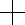

<ion-view view-title="{{DisplayName}}">
    <ion-nav-bar class="bar-stable">
      <ion-nav-back-button class="button-clear"><i class="icon ion-chevron-left"></i> Back</ion-nav-back-button>
    </ion-nav-bar>
  <ion-content class="has-header">
  	<table class="goban" cellspacing="0" cellpadding="0" border="0">
  	<tr ng-repeat="row in rows track by $index">
  		<td ng-repeat="cell in row track by $index">
  			
  			
  			
  		</td>
  	</tr>
  	</table>
  </ion-content>
</ion-view>